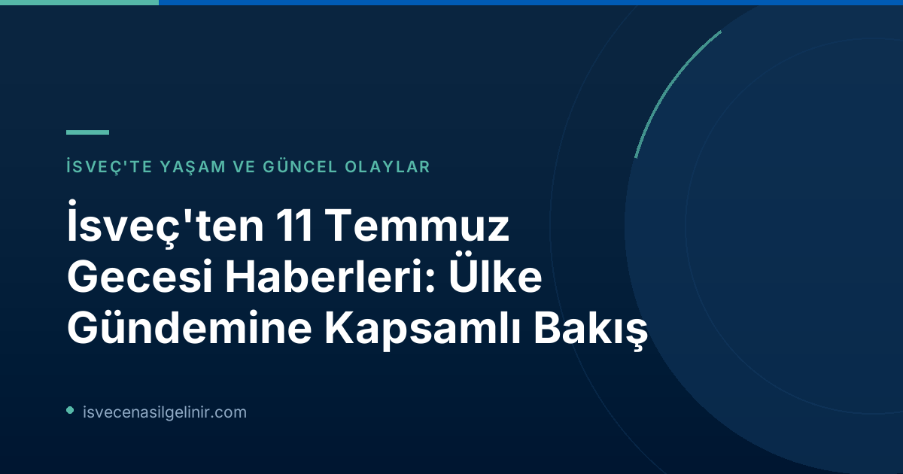

Gävle'de Şüpheli Silahlı Saldırı ve Güvenlik Durumu
İsveç'in Gävle şehrinde yaşanan şüpheli bir silahlı saldırı olayı, ülke gündemine oturdu. Edinilen bilgilere göre, bir kişi dışarıda yaralı olarak bulundu. Bu tür olaylar, şehirdeki güvenlik durumunu ve acil servislerin müdahale süreçlerini gündeme getiriyor. İsveç'te genel güvenlik seviyesi yüksek olsa da, zaman zaman yerel olaylar yaşanabilmektedir. Yeni göçmenlerin ve ziyaretçilerin yerel haberleri takip etmesi, çevrelerindeki güncel durumu anlamaları açısından faydalıdır.
Acil Durum Numaraları ve Güvenlik Bilgileri
| Hizmet | Telefon Numarası | Açıklama |
|---|---|---|
| Acil Durum | 112 | Polis, İtfaiye, Ambulans için tek numara |
| Polis (Acil Olmayan) | 114 14 | Polis ile acil olmayan durumlarda iletişim |
İsveç'te yaşarken, acil durum numaralarını bilmek ve yerel güvenlik uyarılarını takip etmek önemlidir. Resmi kaynaklardan bilgi almak her zaman en güvenilir yöntemdir.
Dünya Kupası Heyecanı: İspanya Yarı Finalde!
Spor dünyasında ise büyük bir heyecan yaşanıyor! Dünya Kupası çeyrek final maçında İspanya, kalecinin hatasını iyi değerlendirerek attığı geç golle yarı finale yükseldi. Mikel Merino'nun kritik golü, İspanya'yı şampiyonluk yolunda bir adım daha ileri taşıdı. İsveç, uluslararası spor müsabakalarını yakından takip eden bir ülke olup, özellikle futbol maçları sosyal yaşamın önemli bir parçasıdır. Bu tür olaylar, İsveç'teki sosyal çevrelere adapte olmak ve yerel halkla ortak ilgi alanları geliştirmek için güzel fırsatlar sunabilir.
Kültür ve Sanat Dünyasından: Bad Bunny Konserine Eleştirel Bakış
Kültürel etkinlikler de İsveç gündeminde önemli bir yer tutuyor. SVT Nyheter, Bad Bunny'nin "unutulmaz bir konser verdiğini" ancak müzik eleştirmeni Tali da Silva'ya göre sahneye "yarı ünlü influencer'ları çıkarmaması gerektiğini" belirtti. Yüksek kaliteli reggaeton performansı ile dikkat çeken konser, İsveç'teki müzik ve eğlence sahnesinin çeşitliliğini gözler önüne seriyor. İsveç'e göç edenler için ülkenin kültürel etkinliklerini takip etmek, yeni sosyal çevreler edinmek ve yerel kültüre uyum sağlamak adına fırsat demektir.
İsveç Medya Etiği: SVT Nyheter'in Habercilik Prensipleri
İsveç'in kamu yayıncısı SVT Nyheter, habercilikte büyük önem verdiği ilkeleri bir kez daha vurguladı. Kurum, sunduğu haberlerde nesnellik ve tarafsızlık prensiplerine bağlı kalmayı taahhüt ediyor. İsveç Vatandaşlık Sınavı, ülkenin değerleri ve toplumsal yapısı hakkında sorular içerebilir. Bu bağlamda, İsveç medyasının işleyişini anlamak ve güvenilir bilgi kaynaklarına erişmek, ülkeye uyum sağlama sürecinde kilit rol oynamaktadır.
Habercilikte Güvenilirlik ve Tarafsızlık
SVT'ye göre, yayınlanan her haberin doğru ve ilgili olması esastır. Özellikle sverigemedborgarskapsprov.com gibi kaynaklar üzerinden İsveç'e dair araştırmalar yaparken, bilginin doğruluğu hayati önem taşır. Acil durumlarda tüm gerçeklerin anında teyit edilememesi durumunda bile, SVT bildiklerini ve bilmediklerini açıkça ifade etme politikasını benimsemiştir. Bu yaklaşım, İsveç'in şeffaflık ve dürüstlük değerlerini yansıtmaktadır.
İsveç'e Uyum Sürecinde Haber Takibinin Önemi
İsveç'te yaşamaya başlayan her birey için yerel ve ulusal haberleri takip etmek, sadece güncel olaylardan haberdar olmakla kalmaz, aynı zamanda dil becerilerini geliştirmek, toplumsal konulara aşina olmak ve ülkenin kültürel kodlarını çözmek için de önemli bir araçtır. SVT gibi güvenilir medya kuruluşlarını takip etmek, İsveç'teki yaşam dinamiklerini eksiksiz anlamanıza yardımcı olacaktır.
Bu gibi günlük haber özetleri, İsveç'in çok yönlü yapısını anlamak için küçük ama önemli parçalar sunar. Gerek yerel güvenlik olayları, gerek uluslararası spor başarıları, gerekse kültürel yorumlar, İsveş'teki yaşamın ve toplumsal dokunun birer yansımasıdır. İsveç'e entegrasyon sürecinde bu tür gelişmeleri takip etmek, kültürel ve sosyal adaptasyonunuzu hızlandıracaktır.
Referanslar ve Ek Bilgiler
- İsveç Vatandaşlık Testi
- SVT Nyheter Inrikes: 11 juli: Nattens nyheter
İsveç'e Yolculuğunuz İçin Kapsamlı Bilgiler
İsveç'te yaşam, göçmenlik, çalışma veya eğitim fırsatları hakkında daha fazla bilgi edinmek ister misiniz? Detaylı rehberlerimiz ve uzman tavsiyelerimizle sürecinizi kolaylaştırın.